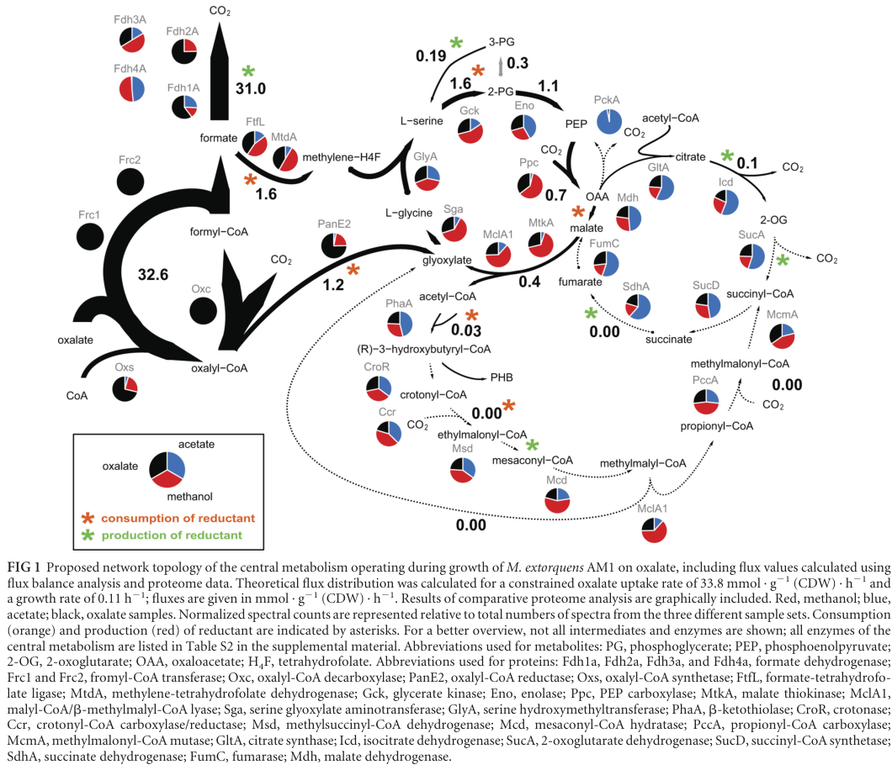

gck encodes glycerate kinase, which catalyzes the ATP-dependent phosphorylation of D-glycerate. In Methylorubrum (Methylobacterium) extorquens AM1 the enzyme has been described biochemically as forming glycerate 2-phosphate (2-phosphoglycerate), i.e. a glycerate 2-kinase activity (EC 2.7.1.165), which is then routed toward the phosphoglycerate/phosphoenolpyruvate pool of central metabolism. This is the step of the serine cycle that converts glycerate (produced from hydroxypyruvate by hprA) back to a phosphorylated C3 intermediate, allowing the cycle to operate continuously and enabling net assimilation of one-carbon units derived from formaldehyde into biomass. The enzyme belongs to the MOFRL (molybdopterin-binding, formate dehydrogenase-related) protein superfamily and contains two characteristic domains: a MOFRL-associated domain (residues 18-245) and a MOFRL domain (residues 321-430). Gck functions as part of the core serine-cycle machinery; its activity in methanol-grown cells (~130 mU/mg protein) is close to the calculated minimal requirement for methylotrophic growth, suggesting it may be near a flux-limiting step. A glycerate kinase-defective mutant fails to grow on oxalate, with the authors concluding that no alternative route for C3-unit synthesis exists under that condition, mirroring earlier conclusions for methylotrophic growth.
| GO Term | Evidence | Action | Reason |
|---|---|---|---|
|
GO:0005737
cytoplasm
|
IEA
GO_REF:0000118 |
ACCEPT |
Summary: Gck is inferred to be a cytoplasmic/cytosolic enzyme, consistent with the localization of other serine cycle enzymes operating in central carbon metabolism. No source directly demonstrates Gck localization experimentally; the cytosolic assignment is an inference from its role as a soluble central-metabolism enzyme (contrasting with the explicitly periplasmic methanol dehydrogenase). [file:METEA/gck/gck-uniprot.txt, "C:cytoplasm"]
Supporting Evidence:
file:METEA/gck/gck-deep-research-falcon.md
No retrieved source explicitly reports subcellular localization experiments for Gck.
|
|
GO:0008887
glycerate kinase activity
|
IEA
GO_REF:0000120 |
MODIFY |
Summary: This captures the correct general catalytic activity (ATP-dependent phosphorylation of D-glycerate) and is the primary function of Gck. However, GO:0008887 is defined by the reaction producing 3-phospho-D-glycerate, whereas the AM1 enzymology literature explicitly describes this enzyme as forming glycerate 2-phosphate (2-phosphoglycerate). The more precise child term GO:0043798 (glycerate 2-kinase activity; D-glycerate + ATP = 2-phospho-D-glycerate + ADP) better matches the experimentally described product. Recommending MODIFY to the more specific 2-kinase term while retaining the general glycerate kinase activity as accurate at the parent level. [file:METEA/gck/gck-uniprot.txt, "glycerate kinase activity"]
Proposed replacements:
glycerate 2-kinase activity
Supporting Evidence:
file:METEA/gck/gck-deep-research-falcon.md
glycerate kinase (forming glycerate 2-phosphate)
file:METEA/gck/gck-deep-research-falcon.md
gck encodes a glycerate kinase that forms glycerate 2-phosphate
|
|
GO:0016301
kinase activity
|
IEA
GO_REF:0000043 |
KEEP AS NON CORE |
Summary: This is a general parent term that is correct but not informative. The specific term GO:0043798 (glycerate 2-kinase activity) / GO:0008887 (glycerate kinase activity) provides precise functional annotation.
|
|
GO:0019649
formaldehyde assimilation
|
TAS
file:METEA/gck/gck-deep-research-falcon.md |
NEW |
Summary: Proposed new biological-process annotation. Gck is a serine-cycle enzyme; the serine cycle is the route by which M. extorquens AM1 assimilates one-carbon units (formaldehyde) into biomass. Gck's glycerate-phosphorylating step regenerates a phosphorylated C3 intermediate to close the cycle, and a glycerate kinase-defective mutant fails to grow on oxalate because no alternative C3-unit synthesis route exists, demonstrating its non-redundant role in C1/C3-unit metabolism. The originally proposed parent term GO:0006730 (one-carbon metabolic process) is replaced with the more specific GO:0019649 (formaldehyde assimilation), defined as the pathways in which formaldehyde is processed and used as a carbon source; the serine cycle is the formaldehyde-assimilation route in AM1, and no serine-pathway-specific child term exists (only RuMP/XuMP variants), so GO:0019649 is the appropriate level of specificity.
Proposed replacements:
formaldehyde assimilation
Supporting Evidence:
file:METEA/gck/gck-deep-research-falcon.md
gck is a serine-cycle gene
file:METEA/gck/gck-deep-research-falcon.md
no alternative for C3 unit synthesis exists
|
Q: Does Gck phosphorylate D-glycerate specifically at the 2-position (forming glycerate 2-phosphate) in vitro, distinguishing it from glycerate 3-kinases, and is this regiospecificity conserved across the MOFRL kinase family?
Q: Is Gck activity or expression regulated in response to growth substrate (methanol/methylamine vs. multicarbon substrates), reflecting on-demand operation of the serine cycle?
Experiment: Purify recombinant Gck (C5AUT6) and determine kinetic parameters and reaction product (glycerate 2-phosphate vs. 3-phosphate) by coupled enzyme assay and NMR/MS to confirm glycerate 2-kinase regiospecificity.
Hypothesis: Gck is a glycerate 2-kinase that produces glycerate 2-phosphate as its physiological product.
Experiment: Perform a 13C-formaldehyde/methanol labeling time course in wild-type versus a gck-complemented mutant of M. extorquens AM1 to quantify the contribution of the Gck step to net formaldehyde-derived carbon assimilation through the serine cycle.
Hypothesis: The Gck-catalyzed step is required for net assimilation of formaldehyde-derived carbon via the serine cycle.
The research report should be a detailed narrative explaining the function, biological processes, and localization of the gene product. Citations should be given for all claims.
You should prioritize authoritative reviews and primary scientific literature when conducting research. You can supplement
this with annotations you find in gene/protein databases, but these can be outdated or inaccurate.
We are specifically interested in the primary function of the gene - for enzymes, what reaction is catalyzed, and what is the substrate specificity? For transporters, what is the substrate? For structural proteins or adapters, what is the broader structural role? For signaling molecules, what is the role in the pathway.
We are interested in where in or outside the cell the gene product carries out its function.
We are also interested in the signaling or biochemical pathways in which the gene functions. We are less interested in broad pleiotropic effects, except where these elucidate the precise role.
Include evidence where possible. We are interested in both experimental evidence as well as inference from structure, evolution, or bioinformatic analysis. Precise studies should be prioritized over high-throughput, where available.
The UniProt target C5AUT6 corresponds to the serine-cycle glycerate kinase gene gck in Methylorubrum (Methylobacterium) extorquens AM1, rather than a glucokinase or other “gck” usage in unrelated organisms. In AM1, gck encodes a glycerate kinase that forms glycerate 2-phosphate, positioning it at the interface between the serine cycle and lower-glycolysis-like intermediates (phosphoglycerate → PEP via enolase). Quantitative enzyme measurements indicate that glycerate kinase activity is close to a calculated minimal requirement for methylotrophic growth, implying potential flux limitation. Genetic/physiology data further support importance of gck: a glycerate kinase-defective mutant fails to grow on oxalate, and the authors conclude that no alternative route exists for the required C3-unit synthesis under those conditions—consistent with earlier conclusions about methylotrophic growth requirements. (smejkalova2010methanolassimilationin pages 5-8, schneider2012oxalylcoenzymeareduction pages 5-7, chistoserdova2003methylotrophyinmethylobacterium pages 6-6)
The gene symbol gck is widely used in biology and can refer to enzymes other than glycerate kinase (e.g., glucokinase). In M. extorquens AM1 specifically, a genomic overview of methylotrophy identifies gck as a serine-cycle gene encoding glycerate kinase, explicitly placing it within the C1 assimilation apparatus. (Chistoserdova et al., 2003; published May 2003; URL https://doi.org/10.1128/jb.185.10.2980-2987.2003) (chistoserdova2003methylotrophyinmethylobacterium pages 6-6)
A detailed enzymology study of methanol assimilation in AM1 describes glycerate kinase as “forming glycerate 2-phosphate”, supporting that this is the glycerate 2-kinase activity (glycerate → 2-phosphoglycerate / phosphoglycerate pool), consistent with the UniProt description “Glycerate kinase” for C5AUT6. (Šmejkalová et al., 2010; published Oct 2010; URL https://doi.org/10.1371/journal.pone.0013001) (smejkalova2010methanolassimilationin pages 5-8)
M. extorquens AM1 is a model facultative methylotroph that assimilates carbon from methanol using the serine cycle, a cyclic pathway that incorporates C1 units into biomass precursors. Within this framework, gck is annotated as a serine-cycle gene in AM1. (Chistoserdova et al., 2003; URL above) (chistoserdova2003methylotrophyinmethylobacterium pages 6-6)
In the AM1 serine cycle, glycerate kinase catalyzes phosphorylation of glycerate to a phosphorylated C3 intermediate described in the AM1 enzymology literature as glycerate 2-phosphate. This step provides entry into reactions shared with central metabolism (e.g., conversion toward PEP). (Šmejkalová et al., 2010; URL above) (smejkalova2010methanolassimilationin pages 5-8)
Experimental description in AM1 indicates glycerate kinase catalyzes glycerate → glycerate 2-phosphate. (Šmejkalová et al., 2010; URL above) (smejkalova2010methanolassimilationin pages 5-8)
Note: The retrieved full-text evidence does not explicitly state ATP/ADP stoichiometry in a balanced equation; however, the enzyme is described as a “kinase” forming glycerate 2-phosphate, which operationally defines the substrate and product pools in AM1. (smejkalova2010methanolassimilationin pages 5-8)
A metabolic network figure for AM1 during oxalate growth explicitly includes Gck (glycerate kinase) alongside Eno (enolase) and other serine-cycle enzymes, tying Gck to phosphoglycerate (PG) and phosphoenolpyruvate (PEP) in the proposed central metabolic topology. (Schneider et al., 2012; published Jun 2012; URL https://doi.org/10.1128/jb.00288-12) (schneider2012oxalylcoenzymeareduction pages 3-4, schneider2012oxalylcoenzymeareduction media 420ca905)
The serine cycle genes in AM1 are distributed across the genome; specifically, gck is not linked to the other major serine-cycle gene clusters. This genomic organization is explicitly noted in the AM1 genomic perspective article. (Chistoserdova et al., 2003; URL above) (chistoserdova2003methylotrophyinmethylobacterium pages 6-6)
During investigation of oxalate assimilation in AM1, Schneider et al. report that a mutant defective in glycerate kinase did not grow on oxalate, leading the authors to conclude that no alternative for C3 unit synthesis exists under oxalotrophic growth, and they state this is similar to what has been reported for methylotrophic growth. (Schneider et al., 2012; URL above) (schneider2012oxalylcoenzymeareduction pages 5-7, schneider2012oxalylcoenzymeareduction media c8912b86)
The corresponding table/figure extracted from the paper includes the mutant-growth data and the central-metabolism schematic where Gck is placed in the network. (schneider2012oxalylcoenzymeareduction media c8912b86, schneider2012oxalylcoenzymeareduction media 420ca905)
The retrieved evidence supports a strong functional requirement for glycerate kinase in oxalate growth and implies similar importance in methylotrophy, but a direct AM1 methanol-growth gck knockout phenotype was not retrieved in this session (a relevant 1997 paper was identified as unobtainable). Therefore, methylotrophic essentiality is supported indirectly (by author comparison and by flux-limitation analysis) rather than by a directly cited gck-null growth curve here. (schneider2012oxalylcoenzymeareduction pages 5-7, smejkalova2010methanolassimilationin pages 5-8)
Šmejkalová et al. (2010) used growth parameters (generation time ~3 h; specific growth rate 0.231 h⁻¹) to calculate a minimal enzyme specific activity threshold needed to sustain methylotrophic growth. They report glycerate kinase among enzymes whose activity is below this threshold under methylotrophic conditions.
Key quantitative values reported for glycerate kinase in methanol-grown AM1:
- Measured glycerate kinase activity: ~130 mU·mg⁻¹ protein
- Calculated minimal requirement: 165 mU·mg⁻¹ protein
- Glycerate pool size: ~3 mM (with malate ~1.6 mM; glyoxylate and glycine >10 mM)
These values support an expert interpretation that the glycerate kinase step may operate near capacity and could contribute to growth limitation on methanol. (Šmejkalová et al., 2010; URL above) (smejkalova2010methanolassimilationin pages 5-8)
Schneider et al. (2012) integrate flux-balance analysis with proteomics for oxalate growth, reporting a computed flux distribution under constraints (e.g., oxalate uptake 33.8 mmol·g(CDW)⁻¹·h⁻¹ and growth rate 0.11 h⁻¹). While this is not a per-enzyme kinetic measurement of Gck, it provides quantitative context for central metabolism where the serine-cycle segment including Gck is active. (Schneider et al., 2012; URL above) (schneider2012oxalylcoenzymeareduction pages 3-4)
No retrieved source explicitly reports subcellular localization experiments for Gck. However, the enzyme is treated as part of central metabolism in cell extracts, proteomic surveys, and metabolic network reconstructions (contrasting with explicitly periplasmic methanol dehydrogenase in the same enzymology paper). Thus, the most defensible statement from retrieved evidence is that localization is not directly established here, with a cytosolic inference based on context rather than direct demonstration. (smejkalova2010methanolassimilationin pages 5-8, schneider2012oxalylcoenzymeareduction pages 3-4)
Direct 2023–2024 primary literature focusing specifically on AM1 gck was not retrieved in this session. However, recent work reinforces the central importance of the serine cycle in Methylorubrum extorquens physiology and engineering, providing updated context for why gck-mediated serine-cycle throughput matters.
Dietz et al. engineered M. extorquens for methanol-based production of glycolic acid and used constraint-based modeling/elementary flux mode analyses to quantify yields and energetic/oxygen demands, emphasizing the serine cycle’s role in generating and regenerating glyoxylate (coupled with the ethylmalonyl-CoA pathway). Although gck is not singled out, this work exemplifies modern practice: improving methylotrophic carbon efficiency depends on the integrity and capacity of core serine-cycle steps such as glycerate kinase. (Dietz et al., 2024; published Dec 2024; URL https://doi.org/10.1186/s12934-024-02583-y) (dietz2024anovelengineered pages 10-12, dietz2024anovelengineered pages 6-8)
Zhang et al. (2024) analyze methylotrophic fitness under low methanol, showing that disruption of a core serine-cycle enzyme (hprA hydroxypyruvate reductase) abolishes methanol growth and that evolution can partially compensate via alternative functions. This highlights that serine-cycle integrity is a key constraint/target in both ecological function and strain optimization. (Zhang et al., 2024; published Jul 2024; URL https://doi.org/10.1038/s41467-024-50342-9) (zhang2024phosphoribosylpyrophosphatesynthetaseas pages 1-2)
Recent metabolic engineering demonstrates Methylorubrum extorquens as a chassis for methanol-based production of value-added chemicals (e.g., glycolic acid), using systems approaches that rely on accurate pathway knowledge of core methylotrophic modules including the serine cycle. While gck itself is not engineered in the retrieved 2024 study, glycerate kinase’s proximity-to-limitation during methanol growth (measured in 2010) makes it a plausible candidate step to consider when improving methylotrophic flux capacity. (dietz2024anovelengineered pages 10-12, smejkalova2010methanolassimilationin pages 5-8)
Schneider et al. (2012) show that AM1 can grow on oxalate and that oxalate assimilation intersects with serine-cycle enzymology; the requirement of glycerate kinase for oxalate growth links gck not only to methanol assimilation but also to broader C2/C1 assimilation flexibility in this organism’s lifestyle. (schneider2012oxalylcoenzymeareduction pages 5-7, schneider2012oxalylcoenzymeareduction pages 3-4)
Potential control point in methylotrophic growth: The enzyme activity/pool-size analysis explicitly flags glycerate kinase as near a minimal required activity for methanol growth, suggesting that increasing Gck capacity (expression, enzyme efficiency, assay-validated activity) could be a rational strategy if methylotrophic growth or product formation is limited by C3 throughput. (smejkalova2010methanolassimilationin pages 5-8)
Pathway indispensability for C3 formation: The oxalate-growth mutant phenotype provides direct genetic/physiological evidence that glycerate kinase is non-redundant for at least one growth mode, supporting its status as a core, non-bypassable step in generating central C3 intermediates under the tested conditions. (schneider2012oxalylcoenzymeareduction pages 5-7, schneider2012oxalylcoenzymeareduction media c8912b86)
Modern engineering relies on intact native methylotrophy: Recent 2024 work demonstrates continued reliance on the native serine cycle for methanol assimilation in platform strains under selective pressures and production designs, reinforcing that gck function should be treated as “core infrastructure” for methylotrophic applications. (zhang2024phosphoribosylpyrophosphatesynthetaseas pages 1-2, dietz2024anovelengineered pages 10-12)
The following evidence table summarizes key findings and citations relevant to curating gck (UniProt C5AUT6).
| Aspect | Key finding | Evidence/notes | Primary citation with year and URL |
|---|---|---|---|
| Gene identity | gck in Methylorubrum extorquens AM1 is a serine-cycle gene encoding glycerate kinase. | Explicitly identified as “another serine cycle gene, gck, encoding glycerate kinase”; also noted to be physically unlinked from the main serine-cycle gene clusters. This supports that UniProt C5AUT6 refers to the glycerate kinase rather than an unrelated kinase such as glucokinase. (chistoserdova2003methylotrophyinmethylobacterium pages 6-6) | Chistoserdova et al., 2003. Journal of Bacteriology. https://doi.org/10.1128/jb.185.10.2980-2987.2003 |
| Enzymatic reaction | Gck forms glycerate 2-phosphate from glycerate. | The enzyme is described as “glycerate kinase (forming glycerate 2-phosphate),” consistent with glycerate 2-kinase activity. (smejkalova2010methanolassimilationin pages 5-8) | Šmejkalová et al., 2010. PLoS ONE. https://doi.org/10.1371/journal.pone.0013001 |
| Substrate/product | Substrate: glycerate; product: glycerate 2-phosphate / phosphoglycerate. | One source explicitly gives glycerate → glycerate 2-phosphate; network placement links Gck to phosphoglycerate (PG) and upstream of enolase/PEP in central metabolism. (smejkalova2010methanolassimilationin pages 5-8, schneider2012oxalylcoenzymeareduction pages 3-4) | Šmejkalová et al., 2010. PLoS ONE. https://doi.org/10.1371/journal.pone.0013001 |
| Pathway role | Gck is part of the serine cycle, contributing to C3-unit formation and linking glycerate/phosphoglycerate to downstream enolase/PEP steps. | Proteomic/network analyses place Gck among serine-cycle enzymes alongside enolase, PEP carboxylase, malate thiokinase, and others; labeling data in oxalate-grown cells showed early labeling of 2/3-phosphoglycerate and PEP, consistent with this segment of the pathway operating in central carbon assimilation. (schneider2012oxalylcoenzymeareduction pages 5-7, schneider2012oxalylcoenzymeareduction pages 3-4) | Schneider et al., 2012. Journal of Bacteriology. https://doi.org/10.1128/jb.00288-12 |
| Regulation / genomic context | gck is not linked to the main serine-cycle gene clusters. | Genomic overview states that gck is a serine-cycle gene but is not colocated with the major serine-cycle gene cluster, unlike several other pathway genes. (chistoserdova2003methylotrophyinmethylobacterium pages 6-6) | Chistoserdova et al., 2003. Journal of Bacteriology. https://doi.org/10.1128/jb.185.10.2980-2987.2003 |
| Mutant phenotype | A glycerate kinase mutant does not grow on oxalate; authors state no alternative C3-unit synthesis route exists under that condition. | Schneider et al. tested serine-cycle mutants during oxalotrophic growth and found that a glycerate kinase-defective mutant failed to grow on oxalate; they note this is similar to prior observations for methylotrophic growth. Figure/Table extraction also confirms the non-growth phenotype. (schneider2012oxalylcoenzymeareduction pages 5-7, schneider2012oxalylcoenzymeareduction media 420ca905, schneider2012oxalylcoenzymeareduction media c8912b86) | Schneider et al., 2012. Journal of Bacteriology. https://doi.org/10.1128/jb.00288-12 |
| Quantitative kinetics / activities | Measured Gck activity in methanol-grown cells was about 130 mU mg⁻¹ protein, near but below a calculated minimum of 165 mU mg⁻¹ for the observed growth rate. | The authors calculated a minimal required activity from growth/cellular carbon fixation demands and concluded glycerate kinase is among the steps potentially close to flux limitation during methylotrophic growth. (smejkalova2010methanolassimilationin pages 5-8) | Šmejkalová et al., 2010. PLoS ONE. https://doi.org/10.1371/journal.pone.0013001 |
| Metabolite pools | Intracellular glycerate pool was reported at about 3 mM. | In the same study, glyoxylate and glycine were >10 mM, malate ~1.6 mM, and many other serine-cycle metabolites were ~1 ± 0.5 mM; glycerate at ~3 mM was discussed as consistent with a possible limitation near the glycerate kinase step. (smejkalova2010methanolassimilationin pages 5-8) | Šmejkalová et al., 2010. PLoS ONE. https://doi.org/10.1371/journal.pone.0013001 |
| Localization inference | No retrieved source explicitly states subcellular localization for Gck; available evidence supports only a cytosolic inference, not direct proof. | In contrast to explicitly periplasmic methanol dehydrogenase, Gck is discussed only as a serine-cycle/central-metabolism enzyme in cell extracts, proteomes, and metabolic network diagrams; no direct localization experiment was retrieved. (smejkalova2010methanolassimilationin pages 5-8, schneider2012oxalylcoenzymeareduction pages 5-7, schneider2012oxalylcoenzymeareduction pages 3-4) | Šmejkalová et al., 2010. PLoS ONE. https://doi.org/10.1371/journal.pone.0013001 |
| Relevance to metabolic engineering / biotech | While recent 2024 studies on Methylorubrum extorquens emphasize the serine cycle as central to methanol-based production and adaptation, they do not specifically target Gck. | Recent work shows serine-cycle dependence for methanol assimilation and product formation in engineered strains (e.g., glycolic acid production; hprA-linked serine-cycle essentiality), reinforcing the importance of this pathway context for biotechnology, but no 2023–2024 retrieved study provided a Gck-specific engineering result. (dietz2024anovelengineered pages 10-12, dietz2024anovelengineered pages 6-8, zhang2024phosphoribosylpyrophosphatesynthetaseas pages 1-2) | Dietz et al., 2024. Microbial Cell Factories. https://doi.org/10.1186/s12934-024-02583-y; Zhang et al., 2024. Nature Communications. https://doi.org/10.1038/s41467-024-50342-9 |
Table: This table summarizes the experimentally supported functional annotation of Methylorubrum extorquens AM1 gck (UniProt C5AUT6), including reaction, pathway role, phenotypes, and quantitative evidence. It is useful as a compact evidence map for gene function curation.
References
(smejkalova2010methanolassimilationin pages 5-8): Hana Šmejkalová, Tobias J. Erb, and Georg Fuchs. Methanol assimilation in methylobacterium extorquens am1: demonstration of all enzymes and their regulation. PLoS ONE, 5:e13001, Oct 2010. URL: https://doi.org/10.1371/journal.pone.0013001, doi:10.1371/journal.pone.0013001. This article has 172 citations and is from a peer-reviewed journal.
(schneider2012oxalylcoenzymeareduction pages 5-7): Kathrin Schneider, Elizabeth Skovran, and Julia A. Vorholt. Oxalyl-coenzyme a reduction to glyoxylate is the preferred route of oxalate assimilation in methylobacterium extorquens am1. Journal of Bacteriology, 194:3144-3155, Jun 2012. URL: https://doi.org/10.1128/jb.00288-12, doi:10.1128/jb.00288-12. This article has 49 citations and is from a peer-reviewed journal.
(chistoserdova2003methylotrophyinmethylobacterium pages 6-6): Ludmila Chistoserdova, Sung-Wei Chen, Alla Lapidus, and Mary E. Lidstrom. Methylotrophy in methylobacterium extorquens am1 from a genomic point of view. Journal of Bacteriology, 185:2980-2987, May 2003. URL: https://doi.org/10.1128/jb.185.10.2980-2987.2003, doi:10.1128/jb.185.10.2980-2987.2003. This article has 402 citations and is from a peer-reviewed journal.
(schneider2012oxalylcoenzymeareduction pages 3-4): Kathrin Schneider, Elizabeth Skovran, and Julia A. Vorholt. Oxalyl-coenzyme a reduction to glyoxylate is the preferred route of oxalate assimilation in methylobacterium extorquens am1. Journal of Bacteriology, 194:3144-3155, Jun 2012. URL: https://doi.org/10.1128/jb.00288-12, doi:10.1128/jb.00288-12. This article has 49 citations and is from a peer-reviewed journal.
(schneider2012oxalylcoenzymeareduction media 420ca905): Kathrin Schneider, Elizabeth Skovran, and Julia A. Vorholt. Oxalyl-coenzyme a reduction to glyoxylate is the preferred route of oxalate assimilation in methylobacterium extorquens am1. Journal of Bacteriology, 194:3144-3155, Jun 2012. URL: https://doi.org/10.1128/jb.00288-12, doi:10.1128/jb.00288-12. This article has 49 citations and is from a peer-reviewed journal.
(schneider2012oxalylcoenzymeareduction media c8912b86): Kathrin Schneider, Elizabeth Skovran, and Julia A. Vorholt. Oxalyl-coenzyme a reduction to glyoxylate is the preferred route of oxalate assimilation in methylobacterium extorquens am1. Journal of Bacteriology, 194:3144-3155, Jun 2012. URL: https://doi.org/10.1128/jb.00288-12, doi:10.1128/jb.00288-12. This article has 49 citations and is from a peer-reviewed journal.
(dietz2024anovelengineered pages 10-12): Katharina Dietz, Carina Sagstetter, Melanie Speck, Arne Roth, Steffen Klamt, and Jonathan Thomas Fabarius. A novel engineered strain of methylorubrum extorquens for methylotrophic production of glycolic acid. Microbial Cell Factories, Dec 2024. URL: https://doi.org/10.1186/s12934-024-02583-y, doi:10.1186/s12934-024-02583-y. This article has 10 citations and is from a peer-reviewed journal.
(dietz2024anovelengineered pages 6-8): Katharina Dietz, Carina Sagstetter, Melanie Speck, Arne Roth, Steffen Klamt, and Jonathan Thomas Fabarius. A novel engineered strain of methylorubrum extorquens for methylotrophic production of glycolic acid. Microbial Cell Factories, Dec 2024. URL: https://doi.org/10.1186/s12934-024-02583-y, doi:10.1186/s12934-024-02583-y. This article has 10 citations and is from a peer-reviewed journal.
(zhang2024phosphoribosylpyrophosphatesynthetaseas pages 1-2): Cong Zhang, Di-Fei Zhou, Meng-Ying Wang, Ya-Zhen Song, Chong Zhang, Ming-Ming Zhang, Jing Sun, Lu Yao, Xu-Hua Mo, Zeng-Xin Ma, Xiao-Jie Yuan, Yi Shao, Hao-Ran Wang, Si-Han Dong, Kai Bao, Shu-Huan Lu, Martin Sadilek, Marina G. Kalyuzhnaya, Xin-Hui Xing, and Song Yang. Phosphoribosylpyrophosphate synthetase as a metabolic valve advances methylobacterium/methylorubrum phyllosphere colonization and plant growth. Nature Communications, Jul 2024. URL: https://doi.org/10.1038/s41467-024-50342-9, doi:10.1038/s41467-024-50342-9. This article has 30 citations and is from a highest quality peer-reviewed journal.

id: C5AUT6
gene_symbol: gck
product_type: PROTEIN
taxon:
id: NCBITaxon:272630
label: Methylorubrum extorquens AM1
description: 'gck encodes glycerate kinase, which catalyzes the ATP-dependent phosphorylation
of D-glycerate. In Methylorubrum (Methylobacterium) extorquens AM1 the enzyme has
been described biochemically as forming glycerate 2-phosphate (2-phosphoglycerate),
i.e. a glycerate 2-kinase activity (EC 2.7.1.165), which is then routed toward the
phosphoglycerate/phosphoenolpyruvate pool of central metabolism. This is the step
of the serine cycle that converts glycerate (produced from hydroxypyruvate by hprA)
back to a phosphorylated C3 intermediate, allowing the cycle to operate continuously
and enabling net assimilation of one-carbon units derived from formaldehyde into
biomass. The enzyme belongs to the MOFRL (molybdopterin-binding, formate dehydrogenase-related)
protein superfamily and contains two characteristic domains: a MOFRL-associated
domain (residues 18-245) and a MOFRL domain (residues 321-430). Gck functions as
part of the core serine-cycle machinery; its activity in methanol-grown cells (~130
mU/mg protein) is close to the calculated minimal requirement for methylotrophic
growth, suggesting it may be near a flux-limiting step. A glycerate kinase-defective
mutant fails to grow on oxalate, with the authors concluding that no alternative
route for C3-unit synthesis exists under that condition, mirroring earlier conclusions
for methylotrophic growth.'
existing_annotations:
- term:
id: GO:0005737
label: cytoplasm
evidence_type: IEA
original_reference_id: GO_REF:0000118
review:
summary: Gck is inferred to be a cytoplasmic/cytosolic enzyme, consistent with
the localization of other serine cycle enzymes operating in central carbon metabolism.
No source directly demonstrates Gck localization experimentally; the cytosolic
assignment is an inference from its role as a soluble central-metabolism enzyme
(contrasting with the explicitly periplasmic methanol dehydrogenase). [file:METEA/gck/gck-uniprot.txt,
"C:cytoplasm"]
action: ACCEPT
supported_by:
- reference_id: file:METEA/gck/gck-deep-research-falcon.md
supporting_text: No retrieved source explicitly reports subcellular localization
experiments for Gck.
reference_section_type: OTHER
- term:
id: GO:0008887
label: glycerate kinase activity
evidence_type: IEA
original_reference_id: GO_REF:0000120
review:
summary: This captures the correct general catalytic activity (ATP-dependent phosphorylation
of D-glycerate) and is the primary function of Gck. However, GO:0008887 is defined
by the reaction producing 3-phospho-D-glycerate, whereas the AM1 enzymology
literature explicitly describes this enzyme as forming glycerate 2-phosphate
(2-phosphoglycerate). The more precise child term GO:0043798 (glycerate 2-kinase
activity; D-glycerate + ATP = 2-phospho-D-glycerate + ADP) better matches the
experimentally described product. Recommending MODIFY to the more specific 2-kinase
term while retaining the general glycerate kinase activity as accurate at the
parent level. [file:METEA/gck/gck-uniprot.txt, "glycerate kinase activity"]
action: MODIFY
proposed_replacement_terms:
- id: GO:0043798
label: glycerate 2-kinase activity
supported_by:
- reference_id: file:METEA/gck/gck-deep-research-falcon.md
supporting_text: glycerate kinase (forming glycerate 2-phosphate)
reference_section_type: OTHER
- reference_id: file:METEA/gck/gck-deep-research-falcon.md
supporting_text: gck encodes a glycerate kinase that forms glycerate 2-phosphate
reference_section_type: OTHER
- term:
id: GO:0016301
label: kinase activity
evidence_type: IEA
original_reference_id: GO_REF:0000043
review:
summary: This is a general parent term that is correct but not informative. The
specific term GO:0043798 (glycerate 2-kinase activity) / GO:0008887 (glycerate
kinase activity) provides precise functional annotation.
action: KEEP_AS_NON_CORE
- term:
id: GO:0019649
label: formaldehyde assimilation
evidence_type: TAS
original_reference_id: file:METEA/gck/gck-deep-research-falcon.md
review:
summary: Proposed new biological-process annotation. Gck is a serine-cycle enzyme;
the serine cycle is the route by which M. extorquens AM1 assimilates one-carbon
units (formaldehyde) into biomass. Gck's glycerate-phosphorylating step regenerates
a phosphorylated C3 intermediate to close the cycle, and a glycerate kinase-defective
mutant fails to grow on oxalate because no alternative C3-unit synthesis route
exists, demonstrating its non-redundant role in C1/C3-unit metabolism. The
originally proposed parent term GO:0006730 (one-carbon metabolic process) is
replaced with the more specific GO:0019649 (formaldehyde assimilation), defined
as the pathways in which formaldehyde is processed and used as a carbon source;
the serine cycle is the formaldehyde-assimilation route in AM1, and no serine-pathway-specific
child term exists (only RuMP/XuMP variants), so GO:0019649 is the appropriate
level of specificity.
action: NEW
proposed_replacement_terms:
- id: GO:0019649
label: formaldehyde assimilation
supported_by:
- reference_id: file:METEA/gck/gck-deep-research-falcon.md
supporting_text: gck is a serine-cycle gene
reference_section_type: OTHER
- reference_id: file:METEA/gck/gck-deep-research-falcon.md
supporting_text: no alternative for C3 unit synthesis exists
reference_section_type: OTHER
core_functions:
- description: Gck catalyzes the ATP-dependent phosphorylation of D-glycerate, described
in AM1 as forming glycerate 2-phosphate (glycerate 2-kinase activity). This step
follows hprA's reduction of hydroxypyruvate to glycerate and feeds the resulting
phosphorylated C3 intermediate into the phosphoglycerate/phosphoenolpyruvate pool
shared with central metabolism (upstream of enolase/PEP). By regenerating a phosphorylated
C3 unit, Gck closes the serine-cycle loop, allowing continuous operation of the
pathway during methylotrophic (and oxalotrophic) growth and enabling net incorporation
of formaldehyde-derived carbon into biomass. The enzyme is a soluble cytosolic
central-metabolism enzyme of the MOFRL kinase family, and a glycerate kinase-defective
mutant fails to grow on oxalate with no alternative route for C3-unit synthesis,
underscoring its non-redundant, core role.
molecular_function:
id: GO:0043798
label: glycerate 2-kinase activity
directly_involved_in:
- id: GO:0019649
label: formaldehyde assimilation
substrates:
- id: CHEBI:16659
label: D-glycerate
locations:
- id: GO:0005737
label: cytoplasm
supported_by:
- reference_id: file:METEA/gck/gck-deep-research-falcon.md
supporting_text: gck encodes a glycerate kinase that forms glycerate 2-phosphate
reference_section_type: OTHER
- reference_id: file:METEA/gck/gck-deep-research-falcon.md
supporting_text: a mutant defective in glycerate kinase did not grow on oxalate
reference_section_type: OTHER
- reference_id: file:METEA/gck/gck-uniprot.txt
supporting_text: Glycerate kinase
references:
- id: file:METEA/gck/gck-uniprot.txt
title: UniProt entry for gck glycerate kinase
findings: []
- id: file:METEA/gck/gck-deep-research-falcon.md
title: 'Falcon deep research report: functional annotation of gck (C5AUT6) in Methylorubrum
extorquens AM1'
findings:
- supporting_text: gck encodes a glycerate kinase that forms glycerate 2-phosphate
reference_section_type: OTHER
- supporting_text: glycerate kinase (forming glycerate 2-phosphate)
reference_section_type: OTHER
- supporting_text: glycerate kinase catalyzes phosphorylation of glycerate to a
phosphorylated C3 intermediate
reference_section_type: OTHER
- supporting_text: gck is a serine-cycle gene
reference_section_type: OTHER
- supporting_text: gck is not linked to the other major serine-cycle gene clusters
reference_section_type: OTHER
- supporting_text: a mutant defective in glycerate kinase did not grow on oxalate
reference_section_type: OTHER
- supporting_text: no alternative for C3 unit synthesis exists
reference_section_type: OTHER
- id: GO_REF:0000043
title: Gene Ontology annotation based on UniProtKB/Swiss-Prot keyword mapping
findings: []
- id: GO_REF:0000118
title: TreeGrafter-generated GO annotations
findings: []
- id: GO_REF:0000120
title: Combined Automated Annotation using Multiple IEA Methods.
findings: []
suggested_questions:
- question: Does Gck phosphorylate D-glycerate specifically at the 2-position (forming
glycerate 2-phosphate) in vitro, distinguishing it from glycerate 3-kinases, and
is this regiospecificity conserved across the MOFRL kinase family?
- question: Is Gck activity or expression regulated in response to growth substrate
(methanol/methylamine vs. multicarbon substrates), reflecting on-demand operation
of the serine cycle?
suggested_experiments:
- description: Purify recombinant Gck (C5AUT6) and determine kinetic parameters and
reaction product (glycerate 2-phosphate vs. 3-phosphate) by coupled enzyme assay
and NMR/MS to confirm glycerate 2-kinase regiospecificity.
hypothesis: Gck is a glycerate 2-kinase that produces glycerate 2-phosphate as its
physiological product.
- description: Perform a 13C-formaldehyde/methanol labeling time course in wild-type
versus a gck-complemented mutant of M. extorquens AM1 to quantify the contribution
of the Gck step to net formaldehyde-derived carbon assimilation through the serine
cycle.
hypothesis: The Gck-catalyzed step is required for net assimilation of formaldehyde-derived
carbon via the serine cycle.
status: COMPLETE
{kind=link}